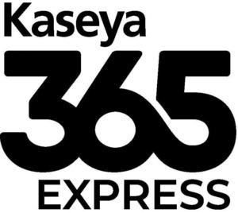

Trade Mark Journal No.2025/009 28 February 2025
WO0000001824153 (9,42)
Office of origin: United States of America
Date of International Registration:30 September 2024
Date of designation in the UK:
30 September 2024

The mark consists of the stylized wording "Kaseya" over the stylized number "365" over the stylized wording "EXPRESS", the number "365" being in a larger font than "Kaseya" and "EXPRESS".
International priority date claimed: 29 April 2024
(United States of America)
(98525345)
- Class 9
- Downloadable enterprise software used to track and improve the performance and availability of business services from an information technology operations perspective; computer software, namely, downloadable application software for use in accessing a platform featuring software for use in managing business processes; downloadable computer software for enterprise application integration (EAI); downloadable computer software for application and database integration; downloadable computer software for management of computer-based information systems and networks for businesses; downloadable computer software for developing, deploying, operating, monitoring, configuring, customizing, implementing and managing of computer systems, networks, and applications; downloadable computer software for workflow and business process automation; downloadable computer software for information technology service automation; downloadable computer software for identifying elements of information technology infrastructure; downloadable computer software for generating performance analytics; downloadable computer software for facilities management; downloadable computer software for field service automation; downloadable computer software for application integration; downloadable computer software development tools; downloadable computer software for ensuring the security and backup of electronic mail; downloadable anti-spyware software; downloadable computer software for controlling and managing access server applications; downloadable computer software for the creation of firewalls; downloadable computer anti-virus software; downloadable computer software for administration of computer local area networks; downloadable computer software for administration of computer networks; computer software for backup, restoration and storage of computer data, electronic data and endpoints locally and in remote locations; computer software for managing both local and remote automated data backup and storage; downloadable computer software for risk and vulnerability analysis and security for computers, computer systems, computer networks and endpoint devices; downloadable computer software for data and file sharing, syncing and storage; downloadable computer software for vulnerability scanning and penetration testing of computers, networks and endpoints to assess information security vulnerabilities; downloadable anti-phishing computer software; downloadable computer networking software; downloadable software for providing security awareness training in the field of computers, electronic data and the internet; downloadable patch software and user authentication software; downloadable computer software for network assessements; downloadable computer software for cyber security threat detection, scanning, alerting and resolution; downloadable computer software for compliance; downloadable computer software for remotely monitoring and managing computer systems, applications and devices; downloadable computer software for monitoring of public records and anonymous, hidden, or encrypted networks and sites on the internet for the unauthorized presence of organizations' data, information and credentials indicating potential cybersecurity breaches, facilitating the detection and prevention of theft and fraud of organizational data, information and credentials, and providing reports to such organizations related thereto.
- Class 42
- Software as a service (SAAS) services featuring enterprise software used to track, analyze and improve the performance and availability of applications, infrastructure and business services; infrastructure-as-service (IAAS) services featuring computer software platforms for creating, managing and deploying cloud computing infrastructure services; platform-as-a-service (PAAS) services featuring computer software platforms for use in developing, configuring, customizing and deploying software applications; software-as-a-service (SAAS) services featuring software for use in managing business processes; software as a service (SAAS) services featuring software for use in managing computer-based information systems and networks; cloud computing services, namely, cloud computing featuring online non-downloadable software for use in developing, configuring, customizing and deploying software applications, managing business processes, and managing computer-based information systems; computer services, namely, cloud hosting provider services; providing temporary use of non-downloadable software to others for information technology service management (ITSM) and information technology operations management (ITOM); application service provider (ASP) services, namely, hosting computer software applications of others; Platform as a service (PAAS) featuring a non-downloadable computer software platform for use by others to develop, configure, customize, and deploy software applications; providing temporary use of non-downloadable software to others for developing, deploying, operating, monitoring, configuring, customizing, implementing, and managing computer systems and applications; providing temporary use of non-downloadable software for managing computer-based information systems for businesses; providing temporary use of non-downloadable software to others for information technology service automation; providing temporary use of non-downloadable software for workflow and business process automation; Computer security service, namely, restricting access to and by computer networks to and of undesired web sites, media and individuals and facilities; computer security services, namely, enforcing, restricting and controlling access privileges of users of computing resources for cloud, mobile or network resources based on assigned credentials; computer services, namely, remote management of the information technology (IT) systems of others; IT integration services; maintenance and updating of computer software; maintenance of computer software relating to computer security and prevention of computer risks; periodic upgrading of computer software for others; technical support services, namely, remote and on-site infrastructure management services for monitoring, administration and management of public and private cloud computing IT and application systems; technical support services, namely, troubleshooting in the nature of diagnosing computer hardware and software problems; technical support services, namely, troubleshooting of computer software problems; technical support, namely, monitoring technological functions of computer network systems; updating of computer software relating to computer security and prevention of computer risks; remote computer backup services; remote online backup of computer data; back-up services for computer hard drive data; computer services, namely, data backup services; computer services, namely, recovery of data from remote data storage centers; providing non-downloadable software for risk and vulnerability analysis and security for computers, computer systems, computer networks and endpoint devices; providing non-downloadable software for data; software as a service (SAAS) services featuring software and computer security consultancy for scanning and penetration testing of computers and networks to assess information security vulnerability; software as a service (SAAS) services featuring anti-phishing software; software as a service (SAAS) services featuring networking software; Software as a service (SAAS) services featuring software for providing security awareness training in the field of computers, electronic data and the Internet; software as a service (SAAS) services featuring patch software and user authentication software; software as a service (SAAS) services featuring software for network assessements; software as a service (SAAS) services featuring software for cyber security threat detection, scanning, alerting and resolution; software as a service (SAAS) services featuring software for compliance; software as a service (SAAS) services featuring software remotely monitoring and managing computer systems, applications and devices; software as a service (SAAS) services featuring software for monitoring of public records and anonymous, hidden, or encrypted networks and sites on the internet for the unauthorized presence of organizations' data, information and credentials indicating potential cybersecurity breaches, facilitating the detection and prevention of theft and fraud of organizational data, information and credentials, and providing reports to such organizations related thereto.
KASEYA US LLC
Representative: Rachel Jacques Maschoff Brennan, 1389 CENTER DRIVE, SUITE 300, Park City UT 84098, UNITED STATES OF AMERICA